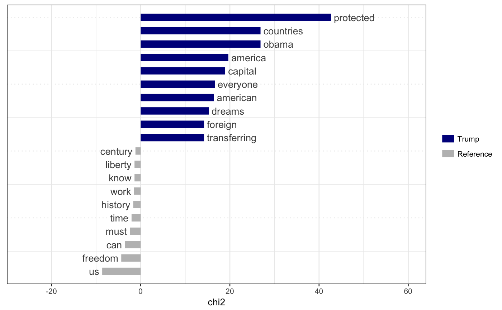
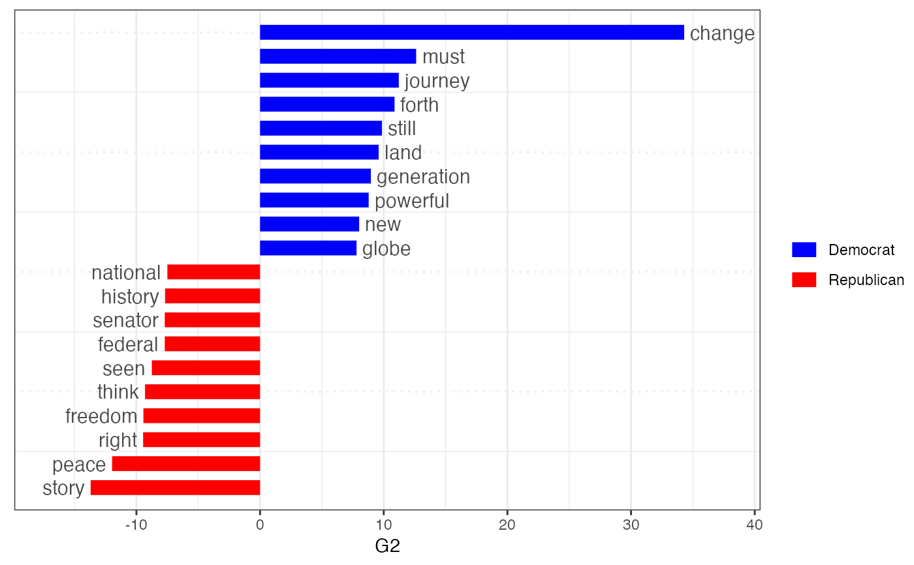

textplot_keyness.RdPlot the results of a "keyword" of features comparing their differential
associations with a target and a reference group, after calculating keyness
using textstat_keyness.
textplot_keyness(x, show_reference = TRUE, show_legend = TRUE, n = 20L, min_count = 2L, margin = 0.05, color = c("darkblue", "gray"), labelcolor = "gray30", labelsize = 4, font = NULL)
| x | a return object from |
|---|---|
| show_reference | logical; if |
| show_legend | logical; if |
| n | integer; number of features to plot |
| min_count | numeric; minimum total count of feature across the target and reference categories, for a feature to be included in the plot |
| margin | numeric; size of margin where feature labels are shown |
| color | character or integer; colors of bars for target and reference documents.
|
| labelcolor | character; color of feature labels. |
| labelsize | numeric; size of feature labels and bars. See size. |
| font | character; font-family of texts. Use default font if |
a ggplot2 object
# compare Trump speeches to other Presidents by chi^2 dfmat1 <- data_corpus_inaugural %>% corpus_subset(Year > 1980) %>% dfm(groups = "President", remove = stopwords("english"), remove_punct = TRUE) tstat1 <- textstat_keyness(dfmat1, target = "Trump") textplot_keyness(tstat1, margin = 0.2, n = 10)# compare contemporary Democrats v. Republicans corp <- data_corpus_inaugural %>% corpus_subset(Year > 1960) docvars(corp, "party") <- ifelse(docvars(corp, "President") %in% c("Nixon", "Reagan", "Bush", "Trump"), "Republican", "Democrat") dfmat2 <- dfm(corp, groups = "party", remove = stopwords("english"), remove_punct = TRUE) tstat2 <- textstat_keyness(dfmat2, target = "Democrat", measure = "lr") textplot_keyness(tstat2, color = c("blue", "red"), n = 10)